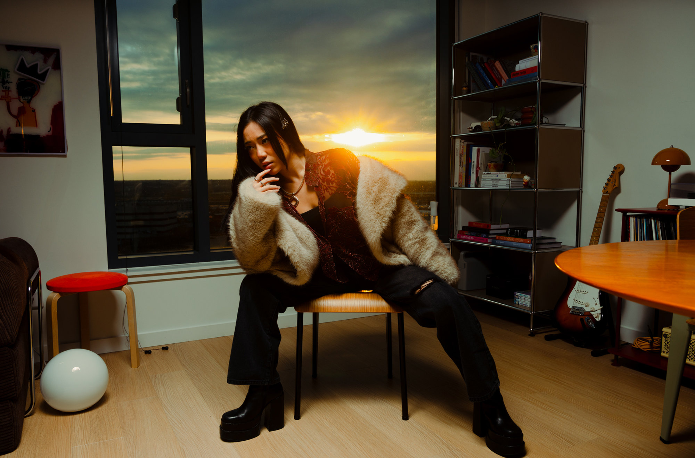
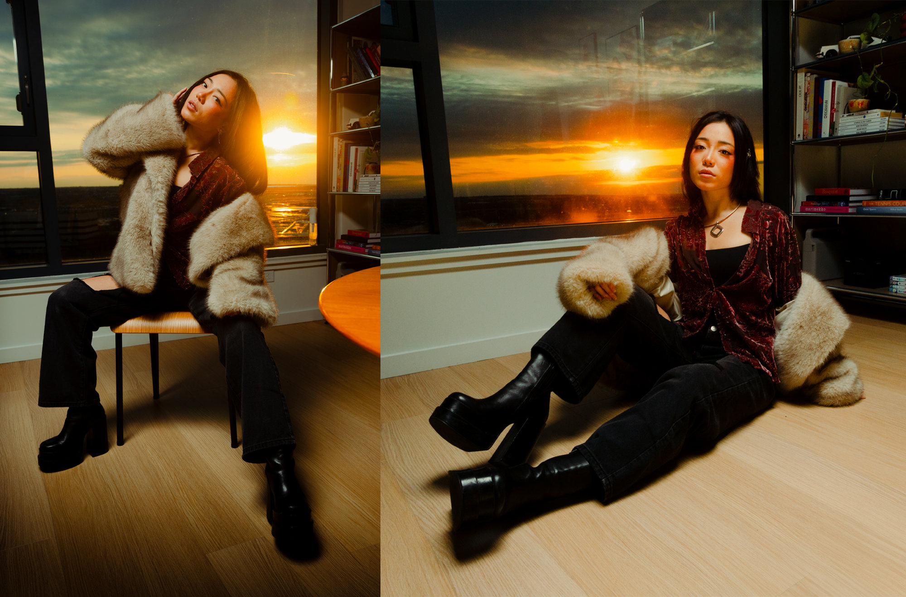
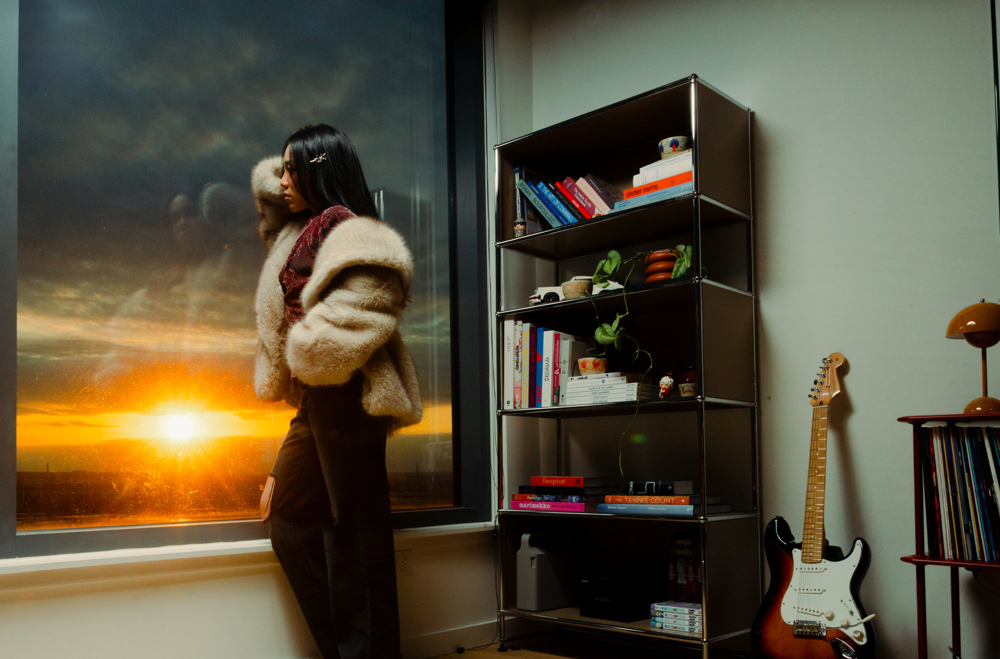
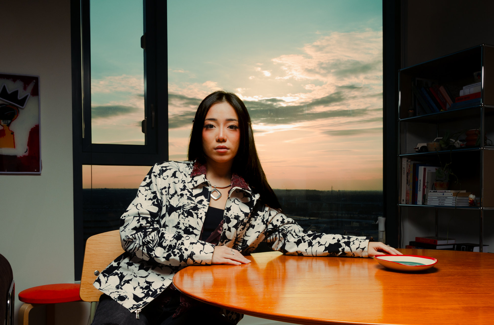
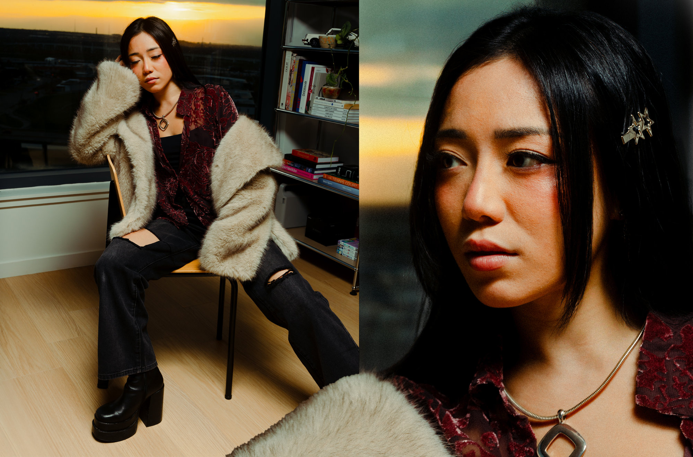
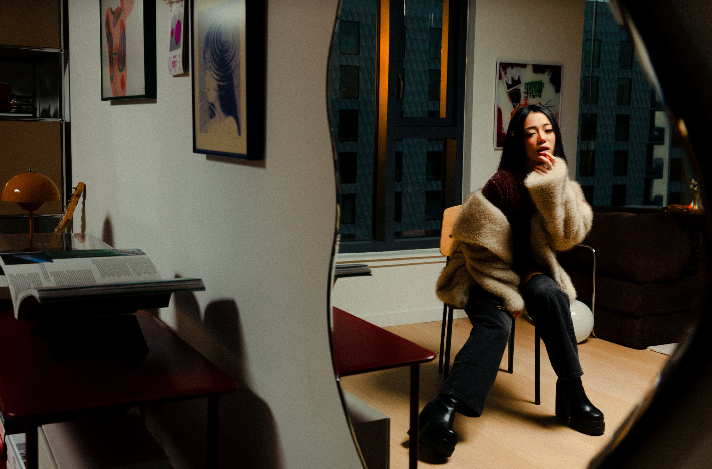

Personal Work / Personal Work
Audrey Given
About the project
This personal portrait session was shot in Dallas with Audrey, someone I’d been wanting to collaborate with for a while. We kept the setup minimal — just sunset light pouring through the windows of my friend’s apartment, which happens to be beautifully designed thanks to his work as an interior designer.
The shoot focused on softness and stillness, letting Audrey move naturally through the light. I handled all the lighting, photography, and editing, and the result was a quiet, refined series that lets her presence speak for itself.
Credits:
Photography, Lighting, Editing – Peter Sanjur
Model – Audrey
Location – Dallas, TX





